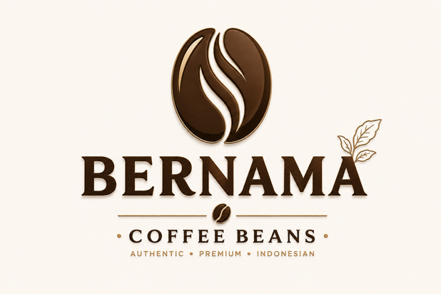
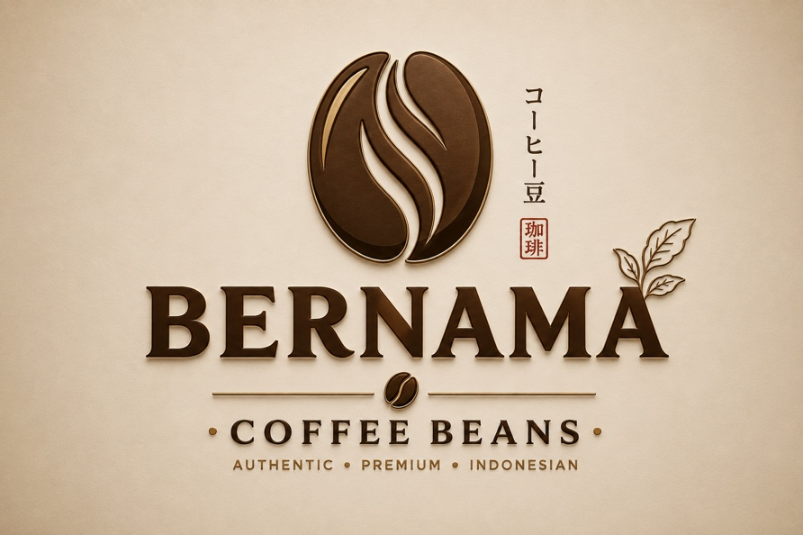
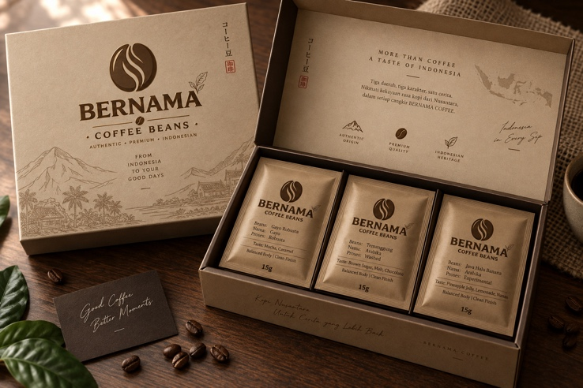
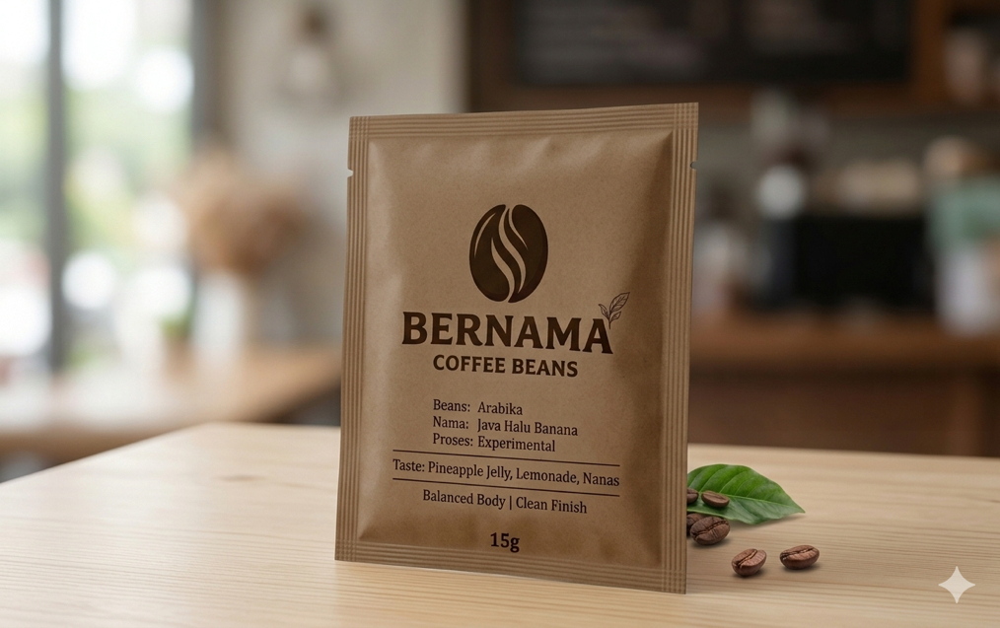
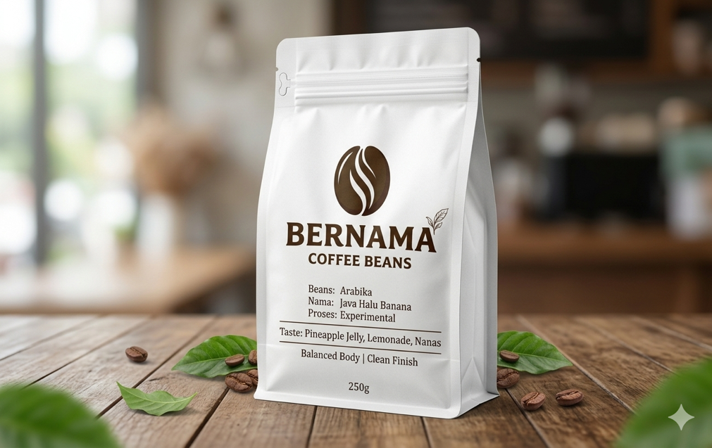
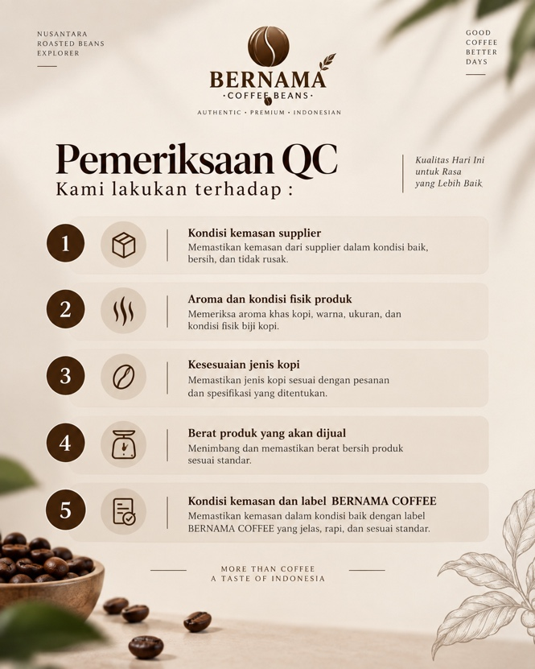

Blind Consumption
Banyak orang menikmati kopi tanpa mengenal origin dan karakter rasa yang membuat setiap daerah berbeda.

BERNAMACOFFEE BEANSTemukan karakter kopi Nusantara dari berbagai origin—dikurasi, dikemas praktis, dan dijelaskan dengan cara yang ramah untuk pemula.

Banyak orang menikmati kopi tanpa mengenal origin dan karakter rasa yang membuat setiap daerah berbeda.
Kemasan 250 g–1 kg bisa terlalu besar untuk pemula yang baru ingin mencoba satu karakter rasa.
Explorer Box menghadirkan beberapa origin dalam ukuran kecil agar konsumen dapat membandingkan rasa dengan lebih mudah.
BERNAMA COFFEE berfokus pada kurasi roasted beans, repacking, branding, pemasaran, penjualan, dan pelayanan—bukan roasting sendiri.
10 varian awal dari proposal BERNAMA COFFEE, dengan informasi origin, jenis, proses, karakter, dan harga per 100 g.
Paket Nusantara Beans Origin Package dirancang untuk mencoba beberapa karakter kopi dalam satu pembelian.

Konsep kemasan aluminium dengan seal/segel, serta beberapa pilihan ukuran sesuai kebutuhan konsumen.

10 g • ArabikaGround medium + coffee filter
10 g • RobustaGround halus untuk tubrukBERNAMA COFFEE memperoleh roasted beans siap jual dari supplier, lalu menjaga kualitas melalui proses pengadaan, pengecekan, repacking, labeling, penyimpanan, hingga pengiriman.

Model micro coffee business yang dapat dijalankan secara mandiri dari skala kecil, tanpa ketergantungan pada toko fisik.
Supplier roasted beans
Percetakan kemasan/label
Marketplace
Komunitas
Pengadaan · QC · Repacking · Labeling · Marketing · Penjualan · Packing
Eksplorasi roasted beans Nusantara berdasarkan origin, proses & karakter rasa.
Edukasi
Rekomendasi kopi
Pelayanan personal
Mahasiswa
Pekerja
Coffee enthusiast
Komunitas kopi
WhatsApp · Instagram · TikTok · Marketplace · Penjualan langsung
Pembelian beans · Kemasan · Label · Transportasi · Marketplace · Promosi & operasional
Penjualan roasted beans dan paket origin.
Target utama adalah mahasiswa dan pekerja muda yang aktif di media sosial, tertarik mencoba produk baru, menyukai kopi, membutuhkan produk praktis, dan sensitif terhadap harga.
Target sekunder: coffee enthusiast, komunitas kopi, reseller kecil, serta konsumen yang mencari buah tangan untuk kolega.
Strategi mitigasi mengikuti risiko utama dalam proposal.
Menjual beberapa varian untuk mengetahui kopi yang paling diminati.
Meningkatkan kemasan, logo, konten, pelayanan, dan katalog.
Membuat paket eksplorasi 3 dan 5 jenis beans.
1 bulan 1 origin bean dengan harga lebih ekonomis bagi reseller.
Coffee sampler, house blend, merchandise, gift package, dan kerja sama kantor/komunitas.
Ceritakan preferensi rasa Anda. BERNAMA COFFEE dapat membantu memilih origin yang cocok untuk perjalanan pertama.